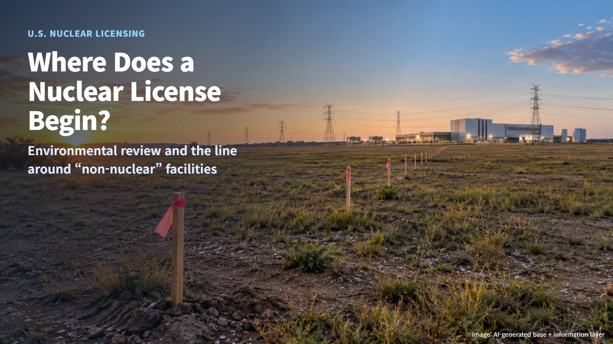
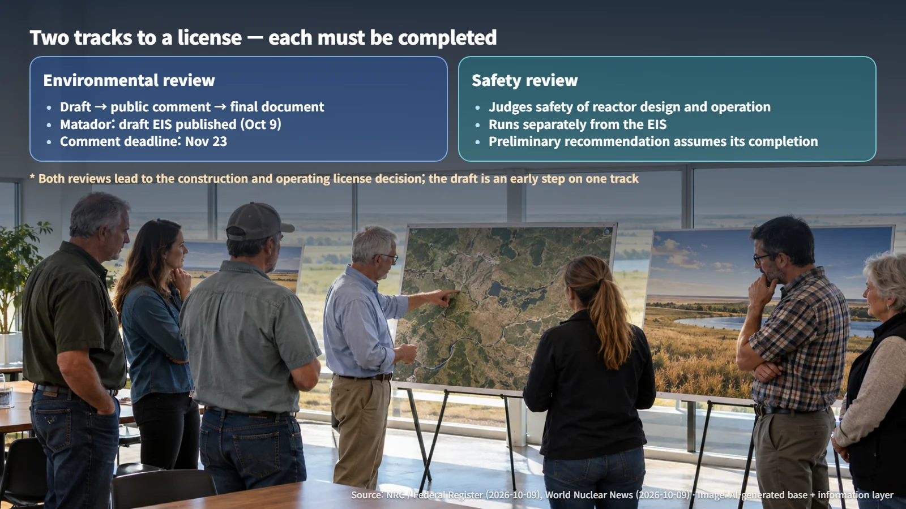
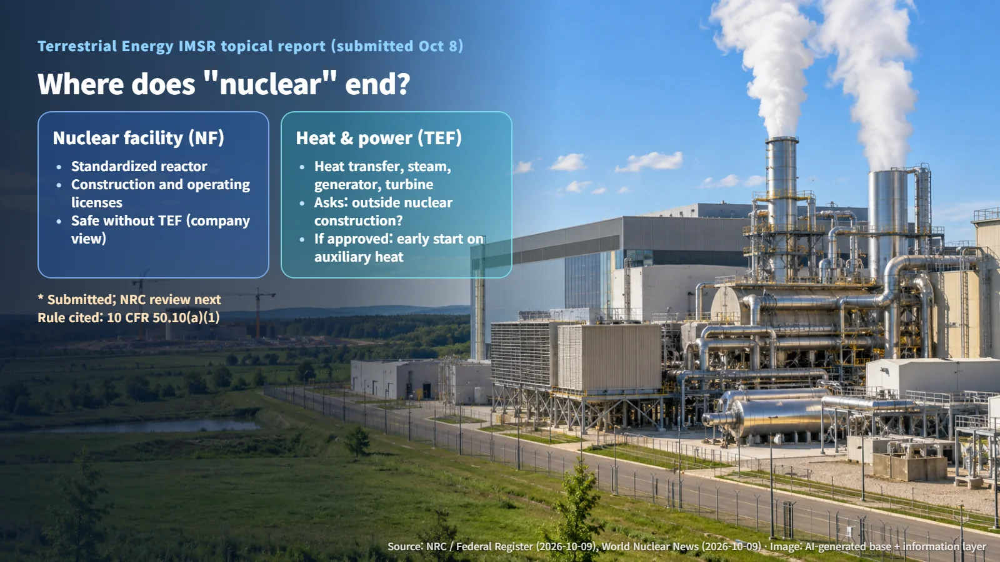

United States · Nuclear Licensing
Where Does a Nuclear License Begin? Environmental Review and the Line Around "Non-Nuclear" Facilities
A draft environmental impact statement for Project Matador and a topical report on the IMSR heat and power facility show where the NRC licensing line is drawn.
Editorial responsibility: GlobalNuclearNews
Headlines such as "draft environmental impact statement released" or "company plans to build the power equipment before the reactor" can easily leave the impression that a nuclear plant already has its license. So when can we actually say a nuclear plant has been licensed? Two pieces of news from the United States in the second week of October 2026 offer a calm way to trace where that line is drawn.

A Nuclear License Moves Along Two Tracks
A nuclear license is the outcome of a long review, built up step by step. Reviews by the U.S. Nuclear Regulatory Commission (NRC) run along two main tracks. One is the environmental review, which looks at how a project affects its surroundings and whether reasonable alternatives exist. The other is the safety review, which examines whether the reactor's design and operation are safe.
Think of building a house. One process checks the effect on the neighborhood, the landscape and the traffic; a separate process checks whether the structure itself is sound. Each track has to be completed on its own, even when one moves ahead faster than the other. Only after both reviews does a project approach the final conclusion: a construction and operating license.
Each track also has several stages of its own. The environmental review alone involves preparing and publishing a draft, collecting public comments, considering those comments and then issuing a final document. Reading the progress of a single stage in the news as a finished "license" therefore paints a picture far ahead of where the project actually stands.

Matador: What a Draft Environmental Impact Statement Represents
On October 9, 2026, the NRC published a notice in the Federal Register announcing the availability of a draft environmental impact statement and a request for public comments on Fermi America's Project Matador. The environmental review relates to an application for a construction and operating license for four AP1000 units at the Advanced Energy and Intelligence Campus in Texas, a project that pairs nuclear power with a large electricity-demand facility.
The draft was prepared through a pilot process in which the applicant itself writes the document under NRC oversight. Stakeholders can comment on the draft's environmental analysis and on the project alternatives, and the comment deadline is November 23, 2026.
One point deserves emphasis. The preliminary recommendation in the notice is conditioned on items such as completion of the safety review. The draft is an early milestone in the environmental track: the final environmental decision and the decision on the construction and operating license both still lie ahead. The environmental impact statement covers environmental impacts and alternatives, while the safety of the reactor's design and operation is judged in the separate safety review. In exam terms, it resembles publishing a draft answer for one subject and inviting comments on it.
IMSR: A Request to Build the Non-Nuclear Part First
Terrestrial Energy announced on October 8 that it had submitted to the NRC a topical report on the heat and power facility (TEF) of its IMSR (Integral Molten Salt Reactor), and World Nuclear News (WNN) reported it on October 9. A topical report is a document a company submits to obtain the regulator's view in advance on a specific technical issue.
The company plans to divide the plant into a standardized nuclear facility (NF) and a non-nuclear TEF that includes heat transfer, steam supply, the generator and the turbine, with the TEF designed to match each customer's heat and power needs. The central request of the report is confirmation that building the TEF falls outside "construction" as defined in U.S. federal regulation 10 CFR 50.10(a)(1).
If the request is approved, the company envisions building and operating the TEF ahead of the construction and operating licenses for the nuclear facility. It has also outlined a plan to supply heat and power first from an auxiliary heat source such as natural gas, and then switch to the nuclear heat source. At this stage the company has submitted the report; NRC approval and any early operation of the TEF are the next steps still to come.
Where Does "Nuclear" End? The Boundary the Two Cases Reveal
The two cases approach the same question from different directions. Matador shows the boundary of procedure: progress in the environmental review moves one track forward, and the safety review and the final license decision each follow their own course. IMSR shows the boundary of equipment: within a single plant, it asks where the line falls between what is subject to nuclear regulation and what is not.
IMSR's case for that line rests on the independence of safety functions. The company explains that the nuclear systems do not rely on the TEF for safe operation, and that the effects of any TEF failure are isolated. To support this, it used a previously approved postulated initiating event analysis methodology, an approach that assumes in advance the events that could start an accident and evaluates their consequences. If a problem occurs on the turbine side, the reactor's safety must stay intact; that is the condition behind the boundary the company proposes. Whether this boundary and its conditions of application are accepted will be confirmed in the NRC's subsequent review documents.

When you come across phrases like "draft environmental impact statement," "report submitted" or "early construction" in the news, it helps to ask two questions: which stage is this, and which reviews are still ahead? A nuclear license is completed through several layers of verification, and simply reading those boundaries carefully filters out much of the exaggeration and confusion.
Revision r001 · October 26, 2026. Editorial attribution added; article content and sources retained.